Inverted Pendulum: Root Locus Controller Design
Key MATLAB commands used in this tutorial are: tf , rlocus , pole , zero , zpk , feedback , impulse
Contents
In this page we will design a controller for the inverted pendulum system using the root locus design method. In the design process we will assume a single-input, single-output plant as described by the following transfer function. Otherwise stated, we will attempt to control the pendulum's angle without regard for the cart's position.
(1)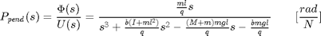
where,
(2)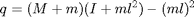
More specifically, the controller will attempt to maintain the pendulum vertically upward when the cart is subjected to a 1-Nsec impulse. Under these conditions, the design criteria are:
- Settling time of less than 5 seconds
- Pendulum should not move more than 0.05 radians away from the vertical
For the original problem setup and the derivation of the above transfer function, please consult the Inverted Pendulum: System Modeling page.
System structure
The structure of the controller for this problem is a little different than the standard control problems you may be used to. Since we are attempting to control the pendulum's position, which should return to the vertical after the initial disturbance, the reference signal we are tracking should be zero. This type of situation is often referred to as a regulator problem. The external force applied to the cart can be considered as an impulsive disturbance. The schematic for this problem is depicted below.

You may find it easier to analyze and design for this system if we first rearrange the schematic as follows.
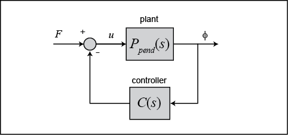
The resulting transfer function 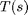 for the closed-loop system from an input of force to an output of pendulum angle is then determined to be the following.
(3)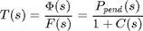
Before we begin designing our controller, we first need to define our plant within MATLAB. Create a new m-file and type in the following commands to create the plant model (refer to the main problem for the details of getting these commands).
M = 0.5;
m = 0.2;
b = 0.1;
I = 0.006;
g = 9.8;
l = 0.3;
q = (M+m)*(I+m*l^2)-(m*l)^2;
s = tf('s');
P_pend = (m*l*s/q)/(s^3 + (b*(I + m*l^2))*s^2/q - ((M + m)*m*g*l)*s/q - b*m*g*l/q);
Root locus design
We will now begin to design a controller for our system employing a root locus design method. We can use the MATLAB command rlocus for generating the root locus plots. Adding the following commands to your m-file and running it in the MATLAB command window will create the root locus plot shown below. This plot displays all possible closed-loop pole locations as a simple proportional control gain is varied from 0 to infinity. The root locus is the same whether the multiplicative gain is in the forward or feedback path of the closed-loop system.
rlocus(P_pend)
title('Root Locus of Plant (under Proportional Control)')
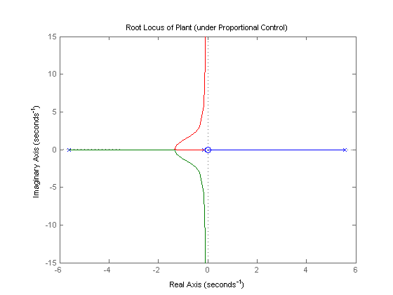 As you can see, one of the branches of the root locus is entirely in the right-half of the complex -plane. This means that no matter the choice of gain , there will always be a closed-loop pole in the right-half plane making the system's impulse response unstable.
To solve this problem, we need to add a pole at the origin (an integrator) via the controller to cancel the plant zero at the origin. This addition will produce two closed-loop poles in the right-half plane. In our subsequent design we can then modify our controller to draw these poles into the left-half plane, thereby stabilizing the closed-loop system. Modifying your m-file with the following commands and re-running in the MATLAB command window will produce the root locus plot shown below.
C = 1/s;
rlocus(C*P_pend)
title('Root Locus with Integral Control')
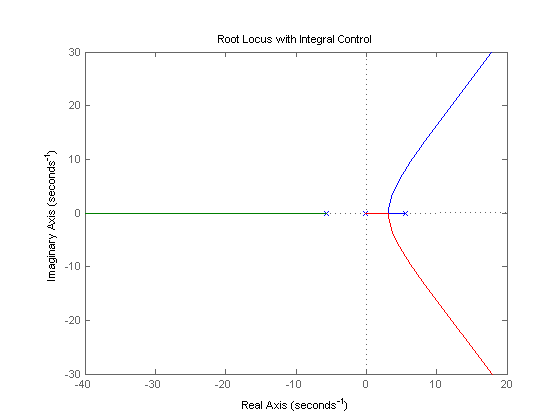 Let's also examine the locations of the system's open-loop poles and zeros so that we may begin to think about how to draw the root locus branches into the left-half plane. Entering the following commands into the MATLAB command window will generate the following output.
zeros = zero(C*P_pend) poles = pole(C*P_pend)
zeros =
0
poles =
0
5.5651
-5.6041
-0.1428
As you can see, there are four poles and only one zero. This means that the root locus will have three asymptotes: one along the real axis in the negative direction, and the other two at 120 degree angles to this one.
This configuration is also unsatisfactory because we still have branches of the root locus that are entirely in the right-half complex plane. In general, we can pull the branches of our root locus to the left in the complex plane by adding zeros to our system. Adding a zero to our controller will reduce the number of asymptotes from three to two. These two asymptotes will be parallel to the imaginary axis and will intersect the real axis at the location calculated from the following expression.
(4)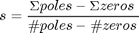
Therefore, for our system as described so far, we have the following assuming a minimum-phase zero (negative).
(5)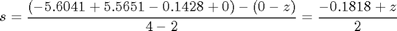
Based on the above, the farthest we can pull the asymptotes to the left in the complex plane is approximately -0.1 for a negligibly small zero. Recall that 2% settling time can be estimated from the following equation.
(6)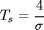
Therefore, dominant closed-loop poles with real parts that approach -0.1 will not be sufficient to meet the 5 second settling time that we require.
PID control
In the above discussion we demonstrated that adding a zero to our integral controller could pull the branches of the root locus to the left in the complex plane, but we were not able to the pull the dominant branches far enough to the left. A possible solution is to add yet another zero. If we place both zeros on the negative real axis between the two plant poles, then the two branches in the right-half plane will be pulled into the left-half plane and will terminate at these two zeros. Let's specifically evaluate the root locus for a controller with an integrator and zeros at -3 and -4. Note that this controller is actually a PID controller. We can create this controller within MATLAB using the zpk command which creates a model by specifying the zeros, poles, and gain of the system. Modifying your m-file with the following commands and re-running will produce the root locus plot shown below.
z = [-3 -4];
p = 0;
k = 1;
C = zpk(z,p,k);
rlocus(C*P_pend)
title('Root Locus with PID Controller')
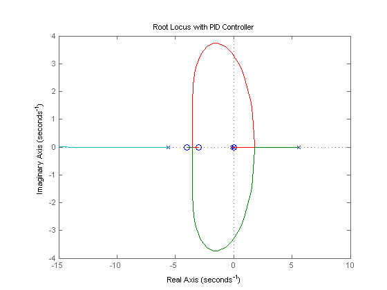 Examining the above root locus helps us to determine whether or not our given requirements can be met. Specifically, since it is desired that the settling time of the system be less than 5 seconds, the real parts of our dominant closed-loop poles should be less than approximately -4/5 = -0.8. In other words, our dominatnt closed-loop poles should be located in the complex -plane to the left of a vertical line at . Inspection of the above shows that this is possible. Since it is also desired that the pendulum not move more than 0.05 radians away from vertical, we also want to ensure that the closed-loop system has sufficient damping. Placing the dominant closed-loop poles near the real axis will increase the system's damping (small ).
To find the gain corresponding to a specific point on the root locus, we can use the rlocfind command. Specifically, enter the command [k,poles] = rlocfind(C*P_pend) in the MATLAB command window.
Then go to the plot and select a point on the root locus on left side of the loop, close to the real axis as shown below with the small + marks. Selecting these poles will ensure that the system settles sufficiently fast and, hopefully, that it has sufficient damping.
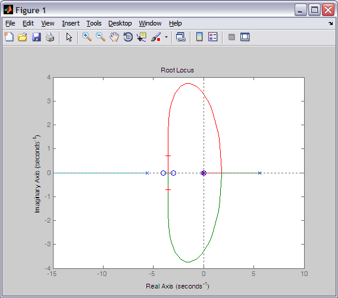
After doing this, you should see an output like the following in the MATLAB command window.
Select a point in the graphics window
selected_point =
-3.5367 + 0.7081i
k =
20.2396
poles =
0
-85.1333
-3.5232 + 0.7086i
-3.5232 - 0.7086i
Note that the values returned in your MATLAB command window may not be exactly the same, but they should at least have the same order of magnitude.
Then we can check the impulse response of our closed-loop system to see if our requirements are actually met for a gain of approximately 20. Add the following commands to your m-file and re-run to generate a closed-loop impulse response like the one shown below.
K = 20;
T = feedback(P_pend,K*C);
impulse(T)
title('Response of Pendulum Angle to an Impulse Disturbance under PID Control');
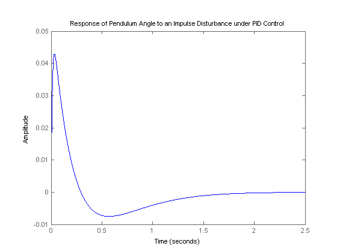 Examination of the above demonstrates that all of the given requirements are met.
What happens to the cart's position?
At the beginning of this page, a block diagram for the inverted pendulum system was given. The diagram was not entirely complete. The block representing the response of the cart's position was not included because that variable is not being controlled. It is interesting though, to see what is happening to the cart's position when the controller for the pendulum's angle is in place. To see this we need to consider the full system block diagram as shown in the following figure.

Rearranging, we get the following block diagram.

In the above, the block is the controller designed for maintaining the pendulum vertical. The closed-loop transfer function  from an input force applied to the cart to an output of cart position is, therefore, given by the following.
from an input force applied to the cart to an output of cart position is, therefore, given by the following.
(7)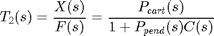
Referring to the Inverted Pendulum: System Modeling page, the transfer function for is defined as follows.
(8)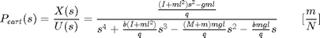
where,
(9)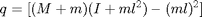
Adding the following commands to your m-file (presuming 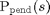 and are still defined) will generate the response of the cart's position to the same impulsive disturbance we have been considering.
P_cart = (((I+m*l^2)/q)*s^2 - (m*g*l/q))/(s^4 + (b*(I + m*l^2))*s^3/q - ((M + m)*m*g*l)*s^2/q - b*m*g*l*s/q);
T2 = feedback(1,P_pend*C)*P_cart;
t = 0:0.01:8.5;
impulse(T2, t);
title('Response of Cart Position to an Impulse Disturbance under PID Control');
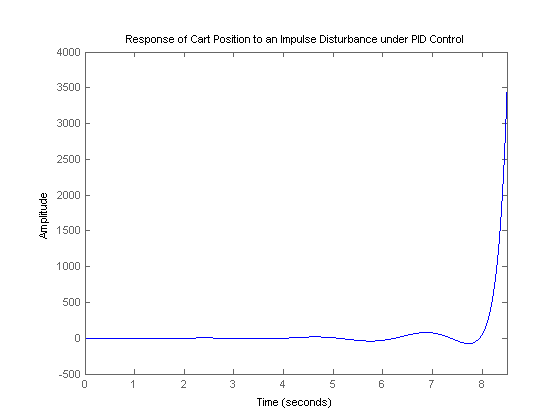 As you can see, the cart's position goes unstable for this impulse disturbance. Therefore, although the PID controller stabilizes the angle of the pendulum, this design would not be feasible to implement on an actual physical system.